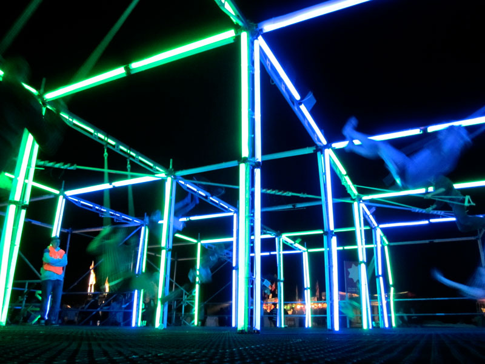

Topic
Playful Interactions
New Playful Interaction Concept
How to encourage students to take breaks between study sessions? Students tend to sit and study for a long time without taking breaks and moving. But it is important from time to time take breaks and move a bit around, it’s healthy for our muscles and spine.
Space: Library or study space with tables and chairs specifically for study sessions
Play mode: Single user, structured
Description: As the student sits down on the chair, the animation of the beatiful tree and environment around it with the nice weather appears on the table. With time a student spends sitting on the chair, the tree starts losing its leaves and when it’s time for a student to take a break, the tree looks very empty and sad. Instead of pleasant picture in front of them on the table, students have grey rainy environment. Taking the break for some specific time (at least 10 mins) would help a tree to resurect and become beautiful and lively again, as well as improve the weather around this tree. The leaves appear on the tree gradually and after 10 mins of the chair being empty, the tree is fully grown back again and the weather is sunny and nice.
Interaction: A chair has the sensor that reacts on the touch when people sit on the chair. The specific part of the table surface is the screen. As the person sits on the chair, it activates the timer that calculates how much time the interaction appeared, and gradually changes the animation on the table based on the interaction time. As the interaction (sitting) stops, it doesn’t reset animation parameters immeaditely, but also changes it gradually, to make sure the student took a proper rest instead of just standing up for a second.
Research
SwingScape
https://interactivespaces.dk/swingscape/
Company: Interactive Spaces Lab
Description: PIXLSWING is an interactive swing-installation with beautiful light and soundscape. The purpose of this interactive installation is to motivate Scandinavian people, who barely visit public spaces in winter because of cold and short daylight times, to go out more often and come to public places. The installation represents cubical space with 10 swings that people can interact with. Each swing has its own “cube” and its own interaction. As people use the swings, the lights of the cube go off and the sound starts playing. If several people use the swings at the same time, they can create music with it. The music and lightshow can be different every time depending on what swings people use at the same time. There are 2 different light zones which are illuminated by different colours when it swings. The lightning in this setup plays a very important role, being the colourful living scenery in an overall grey and cold city. Also the zones are divided in beats and melodys, the blue zone is for beats, while the green zone is for melody.
Type of play: This installation is a multiplayer play that is structured, as people can interact with it continously and there is no final result/goal. In this installation people have to cooperate in order to get the most fun results. This installation involves interdependent actions and shared space. Of course people can use it on their own, but then it’s not that fun.
Reflection
I found this topic very interesting and inspiring. I feel that this type of interactions wake up our inner child, and can encourage us for the actions that are socially and personally beneficial. These interactions create a lot of fun and evoke people’s curiosity, that could be used for achieving great results. More than that, I believe it’s also fun to work on the playful interaction as a designer. It has quite a lot of freedom for the ideas and many senses that can be included in the interactions. It’s always nice to work on the design and ideas that go beyond our computer screens. I believe that designing gamified interactions has a big potential to solve social problems or attract people’s attention to these problems. Different interactions entertain people, or teach them something, or put them closer to each other, or make them see things from different perspective. Through such interactions, people might not even realise that their behaviour/way of thinking is being changed, or it’s easier to make people do something if it’s fun. For many actions people require extrinsic motivation and this type of interactions can provide them. I was very curious about this topic and it was very interesting to explore and research different examples and the psychology behind playful interactions.